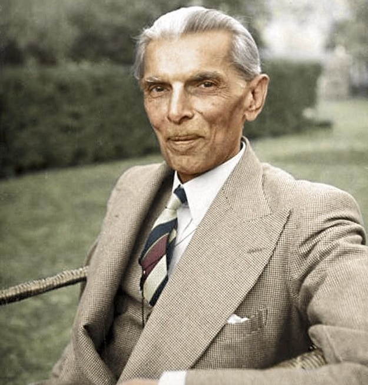

There are two powers in the world; One is the sword and the other is the pen. There is a great competition and rivalry between the two. There is a third power stronger than both, that of the women.
Biography
Quaid-e-Azam Muhammad Ali Jinnah (25 December 1876 - 11 September 1948), the founding father of Pakistan, was a distinguished political leader whose vision and leadership played a pivotal role in the creation of Pakistan in 1947. He tirelessly advocated for the rights of Muslims, successfully securing a separate nation. Jinnah's enduring legacy as the "Father of the Nation" continues to inspire and guide Pakistan's journey towards progress, unity, and democratic values.His remarkable contributions in shaping a nation with religious freedom and equality serve as a beacon of hope for generations to come.